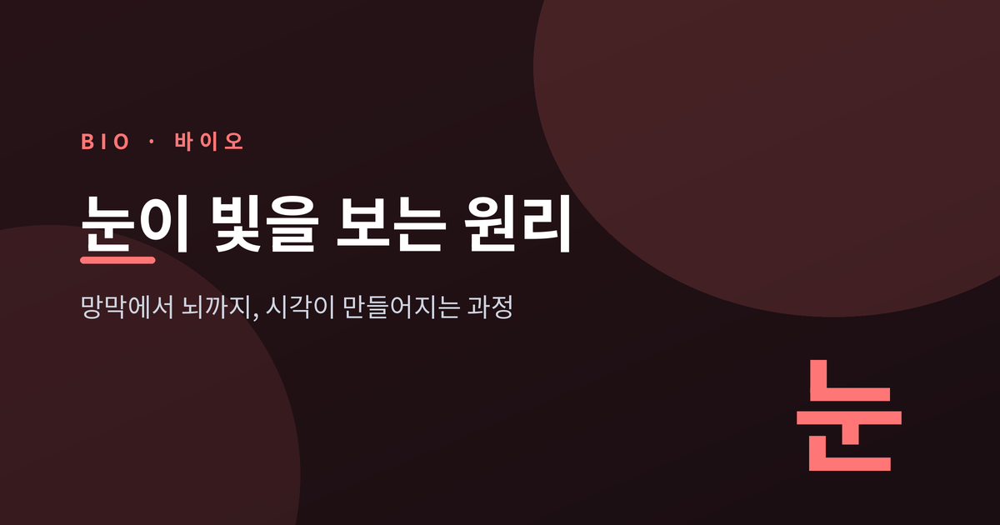
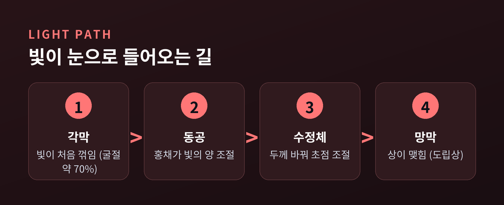
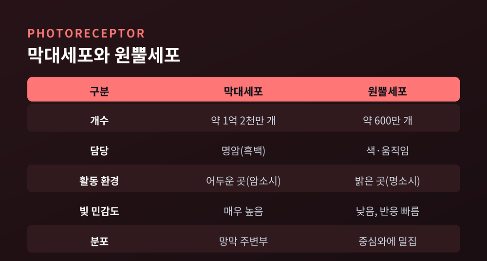
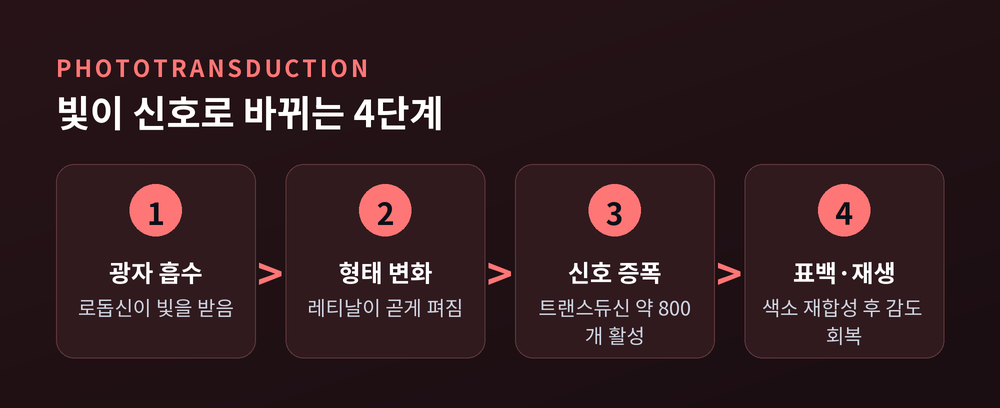
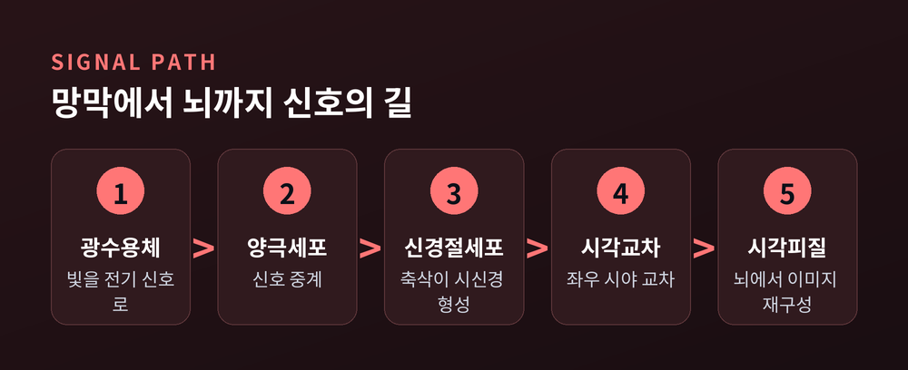
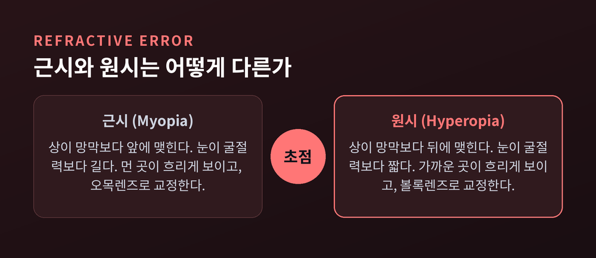

이번 글에서는 우리가 무언가를 "본다"는 일이 실제로 어떻게 일어나는지 정리해 보겠습니다. 결론부터 말씀드리면, 눈은 빛을 신호로 바꾸는 입력 장치일 뿐이고, 이미지를 실제로 만들어 내는 곳은 뇌입니다. 빛이 각막을 지나 망막에 닿고, 그 자극이 신호가 되어 뇌까지 전해지는 여정을 순서대로 따라가 보겠습니다.
눈의 구조는 카메라와 닮았습니다. 각막과 수정체는 렌즈, 홍채는 조리개, 망막은 필름이나 센서에 해당합니다.
물체에서 온 빛은 가장 먼저 각막을 통과합니다. 이때 빛이 꺾이는데, 이 꺾임을 굴절이라 합니다. 놀랍게도 눈 전체 굴절의 약 70%가 이 각막 단계에서 일어납니다. 공기에서 각막으로, 다시 그 안쪽 액체로 매질이 바뀌면서 빛이 크게 휘기 때문입니다.
각막이 대부분을 담당한다면, 수정체는 미세 조정을 맡습니다. 수정체의 굴절력은 각막보다 약하지만, 대신 두께를 바꿀 수 있다는 것이 핵심입니다. 가까운 것을 볼 때는 모양체근이 수축해 수정체가 두꺼워지고, 먼 것을 볼 때는 근육이 풀려 수정체가 얇아집니다. 이 자동 초점 조절 덕분에 멀고 가까운 대상이 모두 또렷하게 맺힙니다.
한 가지 흥미로운 사실이 있습니다. 이렇게 망막에 맺힌 상은 사실 상하좌우가 뒤집힌 도립상입니다. 우리가 세상을 똑바로 보는 것은 뇌가 그 뒤집힌 상을 다시 바로 세워 해석하기 때문입니다.

카메라에 조리개가 있듯, 눈에는 홍채가 있습니다. 홍채 가운데 뚫린 구멍이 동공이고, 이 동공의 크기가 눈에 들어오는 빛의 양을 결정합니다.
밝은 곳에서는 홍채의 원형 근육이 수축해 동공이 작아집니다. 빛이 너무 많이 들어와 망막이 과하게 자극되는 것을 막고, 동시에 초점이 맞는 범위를 넓혀 상을 더 또렷하게 합니다. 어두운 곳에서는 반대로 방사형 근육이 당겨져 동공이 커집니다. 최대한 많은 빛을 받아들여 어둠 속 감도를 끌어올리는 것입니다.
이 조절은 우리가 의식하지 않아도 자율신경계가 알아서 처리합니다. 어두운 극장에 들어갔다가 잠시 뒤 주변이 보이기 시작하는 경험, 누구나 있으실 겁니다. 그 사이 동공은 소리 없이 열리고 있었던 셈입니다.
빛이 마침내 망막에 닿으면, 여기서 빛은 전기 신호로 바뀝니다. 이 변환을 맡는 세포가 광수용체이고, 광수용체에는 성격이 다른 두 종류가 있습니다.
하나는 막대세포입니다. 사람 눈에 약 1억 2천만 개가 있습니다. 빛에 매우 민감해 희미한 별빛 수준의 빛도 잡아냅니다. 대신 색은 구분하지 못하고 명암만 감지합니다. 어두운 밤에 세상이 흑백에 가깝게 보이는 이유가 여기 있습니다. 어두우면 원뿔세포가 거의 쉬고 막대세포만 일하기 때문입니다.
다른 하나는 원뿔세포입니다. 약 600만 개로 막대세포보다 훨씬 적습니다. 빛 민감도는 낮지만 반응이 빠르고, 무엇보다 색을 봅니다. 밝은 낮의 선명하고 다채로운 시야는 원뿔세포의 몫입니다. 원뿔세포는 망막 중심의 중심와라는 지점에 빽빽이 모여 있어, 우리가 정면으로 응시하는 대상이 가장 선명하게 보입니다.

그렇다면 광수용체는 어떻게 빛을 신호로 바꿀까요. 그 핵심에는 로돕신이라는 색소가 있습니다. 로돕신은 옵신이라는 단백질에 레티날이라는 비타민A 유도체가 붙은 형태입니다.
빛 알갱이, 즉 광자가 이 색소에 흡수되면 레티날의 모양이 순식간에 바뀝니다. 굽어 있던 11-시스 형태가 곧게 펴진 올-트랜스 형태로 변하는 것입니다. 이 사소해 보이는 형태 변화가 바로 신호의 방아쇠입니다.
이어서 증폭이 일어납니다. 활성화된 로돕신 하나가 트랜스듀신이라는 분자를 약 800개까지 깨웁니다. 이런 연쇄 반응 덕분에 광자 몇 개 수준의 약한 빛도 큰 신호로 부풀려집니다. 막대세포가 별빛을 감지하는 비결이 이 증폭에 있습니다.
빛을 받은 색소는 잠시 기능을 잃습니다. 레티날이 펴진 상태로는 더 이상 빛에 반응하지 못하는데, 이를 표백이라 합니다. 빛이 사라지면 새 색소가 다시 합성되어 감도를 되찾습니다. 밝은 곳에 있다가 어두운 방에 들어가면 처음엔 캄캄하다가 서서히 물체가 드러나는 암순응, 그 정체가 바로 이 색소의 재생 과정입니다.

망막에서 만들어진 신호는 곧바로 뇌로 직행하지 않습니다. 망막 안에서 몇 단계를 거칩니다. 광수용체가 만든 신호는 양극세포로 넘어가고, 다시 신경절세포로 모입니다.
신경절세포에서 뻗어 나온 가느다란 축삭들이 다발로 묶인 것이 시신경입니다. 시신경이 눈을 빠져나가 뇌로 향합니다.
두 눈의 시신경은 시각교차라는 지점에서 만납니다. 여기서 각 눈의 안쪽 절반 신호가 반대편으로 교차합니다. 그 결과 왼쪽 시야는 오른쪽 뇌가, 오른쪽 시야는 왼쪽 뇌가 맡아 처리하게 됩니다. 신호는 시상의 외측슬상핵이라는 중계소를 거쳐, 마침내 뒤통수 쪽의 일차시각피질에 도달합니다.
정리하면 이렇습니다. 예전에는 눈이 세상을 본다고 여겼습니다. 지금 우리가 아는 사실은 조금 다릅니다. 눈은 빛을 신호로 옮기는 창구일 뿐, 실제로 이미지를 짓는 것은 뇌입니다.

색을 보는 방식은 두 이론이 함께 설명합니다. 하나는 삼원색설입니다. 원뿔세포는 세 종류가 있어 각각 짧은 파장인 파랑, 중간 파장인 초록, 긴 파장인 빨강에 가장 민감합니다. 최대 감도 파장은 대략 420, 530, 560나노미터 부근입니다. 세 원뿔이 받은 자극의 비율을 뇌가 비교해 색을 판단합니다.
다른 하나는 반대색설입니다. 색이 빨강과 초록, 파랑과 노랑, 검정과 흰색이라는 대립 쌍으로 처리된다는 관점입니다. 빨간 면을 한참 보다가 흰 벽으로 시선을 옮기면 초록 잔상이 뜨는 현상이 이것으로 설명됩니다. 두 이론은 서로 다투지 않습니다. 망막의 원뿔 단계에서는 삼원색설이, 신호가 뇌로 가는 단계에서는 반대색설이 작동합니다. 단계가 다를 뿐입니다.
입체감은 두 눈 덕분에 생깁니다. 두 눈은 약 6센티미터 떨어져 있어 조금씩 다른 상을 봅니다. 뇌는 이 좌우 상의 미세한 차이를 비교해 거리와 깊이를 계산하는데, 이를 입체시라 합니다.
선명하게 보려면 상이 망막 위에 정확히 맺혀야 합니다. 이 초점이 앞뒤로 어긋난 것이 근시와 원시입니다.
근시는 상이 망막보다 앞쪽에 맺히는 상태입니다. 눈이 굴절력에 비해 너무 길거나 굴절이 너무 강할 때 생기며, 멀리 있는 것이 흐리게 보입니다. 오목렌즈로 초점을 뒤로 밀어 교정합니다. 원시는 반대로 상이 망막 뒤쪽에 맺힙니다. 눈이 너무 짧을 때 생기고 가까운 것이 잘 안 보이며, 볼록렌즈로 바로잡습니다.

끝으로 한 마디만 더 드리겠습니다. 눈이 빛을 보는 일은 각막의 굴절 한 번으로 끝나는 단순한 사건이 아니었습니다. 빛을 모으고, 신호로 바꾸고, 뇌까지 전해 다시 조립하는 긴 여정의 결과였습니다.
"본다는 것은 눈이 아니라, 눈과 뇌가 함께 만드는 일이다."
오늘 창밖 풍경을 바라보실 때, 그 한 장면을 위해 몸속에서 얼마나 정교한 일이 벌어지고 있는지 한번 떠올려 보시면 좋겠습니다.